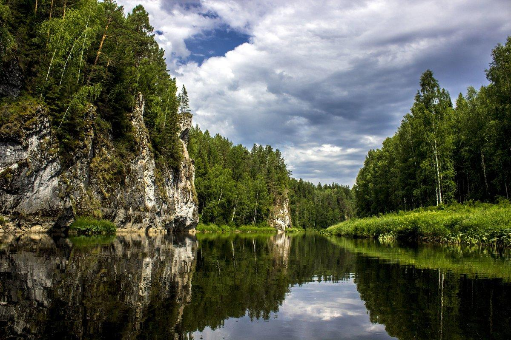
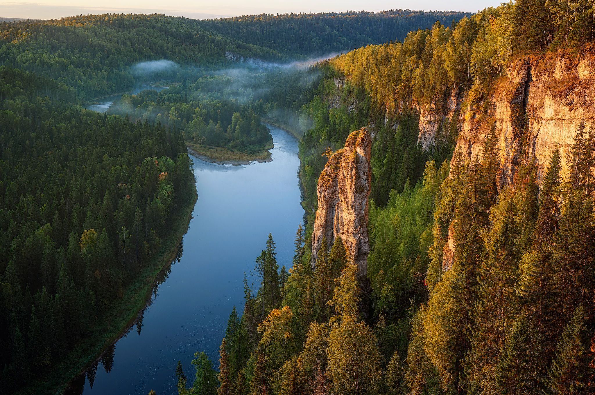
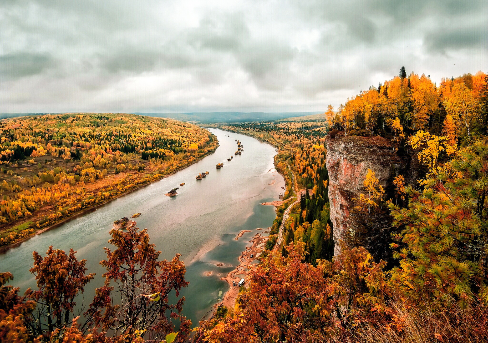

В восточной части Пермского края находится природный парк «Пермский». Главной достопримечательностью парка являются реки Усьва, Вишера и Чусовая, которые привлекают тысячи туристов. По берегам этих рек можно увидеть красивые скальные обнажения. Благодаря карстовым явлениям в долинах рек образовалось более двух десятков пещер, карстовых воронок и озёр. Здесь можно увидеть более 49 особо ценных геологических, геоморфологических и гидрологических объектов. Среди них — Каменный город, Столбы, камень Ветлан, Великан, Глухие камни, Голубое озеро, пещеры Сухого лога и другие.
- Общая площадь парка составляет 125 413 гектаров;
- Он состоит из трёх отдельных участков: Усьвинского, Чусовского и Вишерского;
- Цель создания: эффективное использование природных ресурсов с сохранением природных комплексов и объектов, представляющих большую экологическую и эстетическую ценность.
Чусовской участок
Расположен в восточной части Пермского края на западных склонах Уральских гор в долине реки Чусовой. Является уникальным природным комплексом. Рельеф участка представляет собой холмистую местность с небольшими возвышенностями. Большая часть территории покрыта лесами, преимущественно состоящими из хвойных пород. На южных склонах долины Чусовой можно встретить светлые сосновые леса, а в прибрежных зонах растут ольховые, черёмуховые леса и ивы.
Усьвинский участок
Усьвинский участок расположен в восточной части Пермского края, на западных склонах Уральских гор, в долине реки Усьвы в её нижнем и среднем течении. Он представляет собой полосу длиной около 30 километров, которая тянется с северо-востока на юго-запад вдоль долины реки. Территория участка практически полностью расположена в пределах района средне- и южнотаежных предгорных пихтово-еловых и елово-пихтовых лесов.
Вишерский участок
Участок природного парка «Вишерский» расположен на северо-востоке Пермского края, в Красновишерском муниципальном районе. Территория природного парка практически полностью приурочена к долине реки Вишера. Участок вытянут с юго-запада на северо-восток. Территория участка практически полностью расположена в пределах района средне- и южнотаежных предгорных пихтово-еловые и елово-пихтовых лесов.